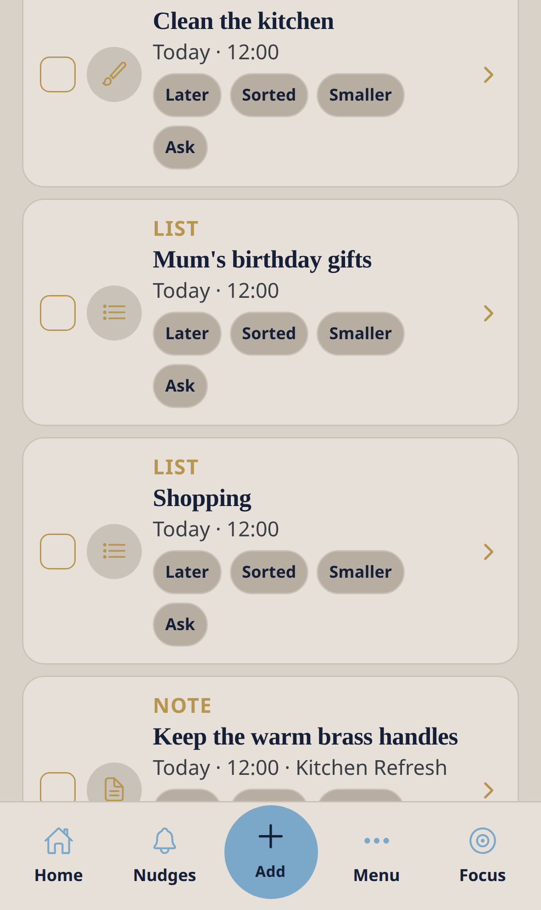

Core module — no Ready4 pack required
Nudges
Your working list. Later, Sorted, Smaller and Ask live on the row — no form, no guilt.
Nudge me Ready v3 · 0.3.1 · Bottom tab: Nudges.

Workflow
- Open Nudges to see open items.
- Tap Later to move something to tomorrow.
- Tap Sorted when it is done — a small Reward Bank point may be added.
- Tap Smaller if it feels like too much.
- Tap Ask to send a message about that item from this phone.
- Filter with Open / All / Done, or Dates / To-dos / Lists. Search if the list is long.
Good to know
- Skip, snooze and hard days never cost you anything in the app.